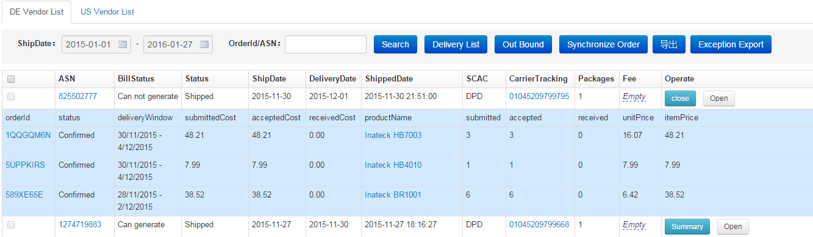

Vendor订单管理
Vendor订单管理是将自己产品卖给亚马逊自营，目前支持德国和美国Vendor。Vendor订单通过ERP服务每两小时自动抓取。
DE Vendor List:

- Delivery List:点击Delivery List按钮，统计时间段分产品发货数量汇总及其具体明细
- Out Bound:勾选单个或多个包货单前复选框，点击Out Bound按钮，出库成功，复选框置灰，记录ShippedDate
- Synchronize Order:点击Synchronize Order按钮，及时同步vendor订单，大约5分钟左右同步完成
- Exception Export:分包货单汇总订单分产品accepted数量和received数量不等异常产品数量
- 未发货的包货单，每项记录后出现Out Bound按钮，点击Out Bound按钮，出库成功，复选框置灰，记录ShippedDate
- Operate列Open按钮，点击Open按钮手动标记异常包货单，被标记的包货单背景颜色特殊标识，系统每两小时会自动标注异常包货单。异常的包货单出现Close按钮，点击Close按钮，关闭包货单异常标注
- CarrierTracking列，点击链接可跟踪物流详情
US Vendor List:
操作及说明同DE Vendor List。